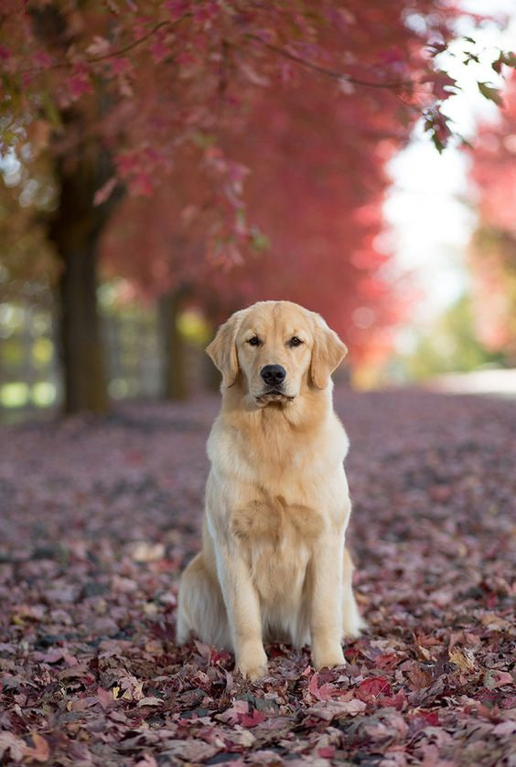
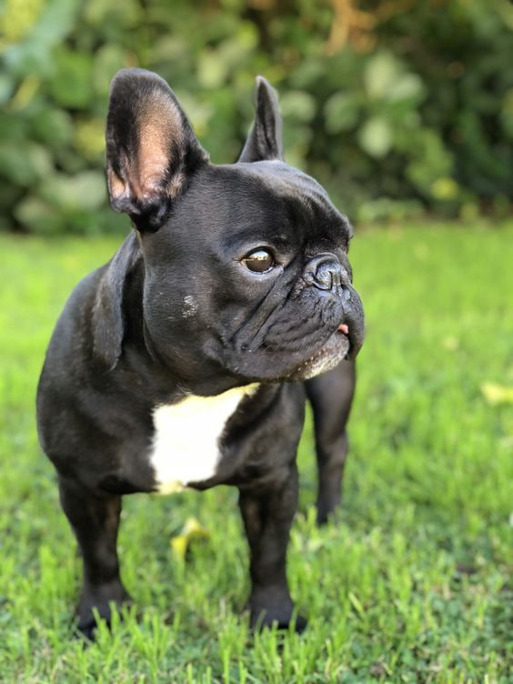
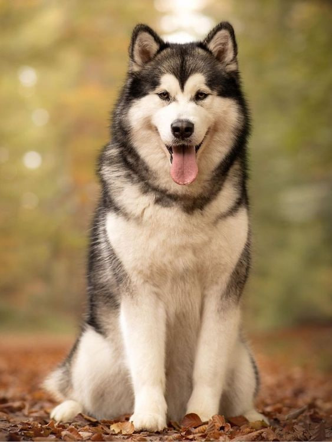
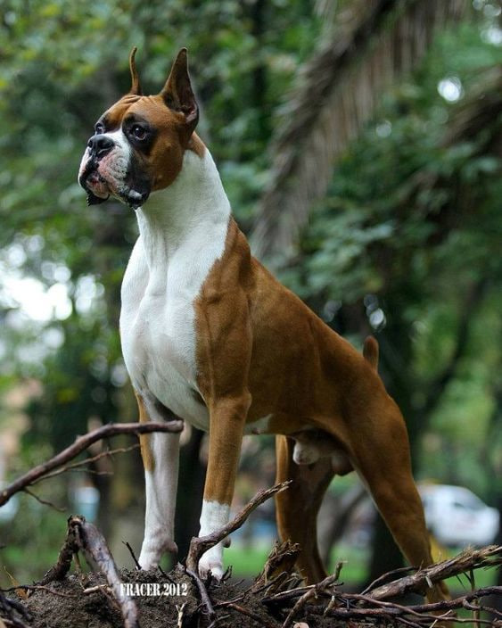
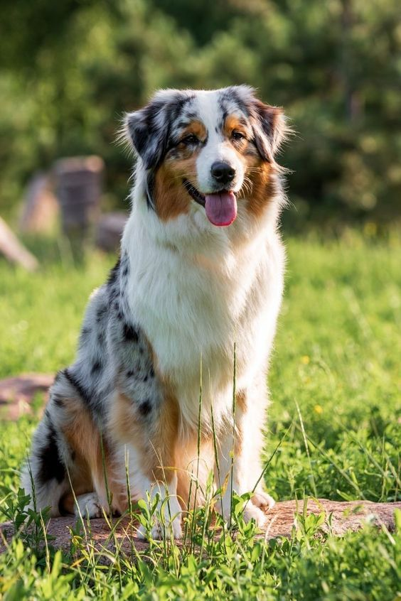

"Дружба на чотирьох лапах: психологія, догляд та доров'я собак"
Психологія поведінки собак
Соціалізація є важливим аспектом розвитку собаки. Вона допомагає вашому улюбленцю стати впевненим та адаптивним у різних ситуаціях. Знайомство з іншими собаками, людьми та новими середовищами з раннього віку сприяє формуванню позитивних поведінкових навичок. Організовуйте регулярні прогулянки та відвідування парків, де ваша собака зможе спілкуватися з іншими тваринами. Це не лише допомагає зменшити страхи та тривоги, але й сприяє загальному благополуччю вашого улюбленця.
Поради щодо виховання та позитивного посилення
Позитивне посилення є ефективним методом виховання собак. Використання нагород, таких як ласощі, похвала або іграшки, для підкріплення бажаної поведінки допомагає собаці зрозуміти, які дії є прийнятними. Важливо залишатися послідовним у своїх методах і не застосовувати фізичні покарання, оскільки вони можуть викликати страх і агресію. Натомість фокусуйтеся на заохоченні та винагородженні за правильну поведінку. Наприклад, якщо ви хочете навчити собаку сидіти на команду, нагороджуйте її щоразу, коли вона виконує команду правильно. З часом собака зрозуміє, що виконання команди призводить до позитивного результату, і буде повторювати цю поведінку. Ці прості, але ефективні підходи допоможуть вам краще розуміти та виховувати вашого чотирилапого друга, забезпечуючи йому щасливе та здорове життя.
Щоб краще розуміти настрій та емоції вашої собаки, звертайте увагу на такі аспекти:
Хвіст:
Розслаблений і природно опущений хвіст: спокійний стан.
Виляє хвіст: радість або збудження, але будьте уважні до швидкості та положення.
Піднятий і жорсткий хвіст: настороженість або агресія.
Підтягнутий під живіт хвіст: страх або підкорення.
Вуха:
Підняті та направлені вперед вуха: цікавість або настороженість.
Вуха притиснуті до голови: страх, тривога або підкорення.
Розслаблені вуха: спокійний та задоволений стан.
Очі:
Розслаблений погляд: спокій та задоволення.
Розширені зіниці: страх, збудження або агресія.
Контакт очей: впевненість, але якщо погляд напружений, це може бути загрозою.
Паща:
Розслаблені губи та відкритий рот: спокійний стан.
Зуби оголені, губи напружені: агресія або страх.
Піджаті губи: страх або підкорення.
Постава:
Розслаблена, природна постава: спокійний та задоволений стан.
Напружена, висока постава: настороженість або впевненість.
Занижена, нахилена вперед постава: підкорення або страх.
Лай:
Короткі та гучні гавкання: тривога або попередження.
Високий і швидкий лай: радість або збудження.
Низький, глибокий лай: загроза або охорона території.
Вой:
Довгий та протяжний вой: самотність або бажання привернути увагу.
Скавчання та скиглення:
Низьке скавчання: дискомфорт або біль.
Високе скавчання: радість або прохання.
Ігрова поведінка:
Виляючий хвіст, відкритий рот, грайливий поклін (передні лапи опущені, задні підняті): запрошення до гри.
Захисна поведінка:
Гучний лай, піднятий хвіст, напружене тіло: захист території або відчуття загрози.
Підкорення:
Піджатий хвіст, притиснуті вуха, низька постава: визнання домінування іншої тварини або людини.
Соціалізація:
Доброзичливе ставлення до інших собак і людей: гарна соціалізація та відчуття безпеки.
Уникання контактів або агресія: страх, тривога або недостатня соціалізація.
Догляд за собаками
Основні принципи харчування собак
Збалансоване харчування є основою здоров'я вашої собаки. Важливо забезпечити раціон, який містить всі необхідні поживні речовини, такі як білки, жири, вуглеводи, вітаміни та мінерали. Білки є основним будівельним матеріалом для м'язів, тканин, органів та ферментів, важливими для росту та відновлення клітин. Якісні джерела білка включають м'ясо (курка, яловичина, індичка), рибу (лосось, тунець), яйця та молочні продукти (йогурт, сир). Для дорослих собак зазвичай необхідно 18-25% білка в раціоні, а для цуценят та активних собак може знадобитися більше.
Жири забезпечують енергію, підтримують здоров'я шкіри та шерсті, допомагають засвоювати вітаміни A, D, E та K. Корисні жири можна знайти в риб'ячому жирі, лляній олії та курячому жирі. В раціоні має бути 10-15% жирів для дорослих собак, але ця кількість може змінюватись в залежності від рівня активності вашого улюбленця.
Вуглеводи є джерелом швидкої енергії та включають цукри, крохмалі та клітковину. Собаки можуть отримувати вуглеводи з зернових, овочів та фруктів. Рис, овес, картопля, солодка картопля, морква, гарбуз, яблука та ягоди є добрими джерелами вуглеводів. Обирайте складні вуглеводи з низьким глікемічним індексом для стабільного рівня цукру в крові.
Вітаміни та мінерали відіграють ключову роль у підтримці обміну речовин, здоров'я кісток, функцій імунної системи та багатьох інших процесів. Важливими вітамінами для собак є вітаміни групи B (енергія та метаболізм), вітамін A (зір, шкіра), вітамін D (кістки), вітамін E (антиоксидант) та вітамін K (згортання крові). Мінерали, такі як кальцій (кістки та зуби), фосфор (енергія та кістки), цинк (шкіра та шерсть) та залізо (кровообіг), також необхідні для здоров'я собаки.
Вода є життєво важливою складовою раціону. Вона необхідна для всіх життєвих процесів: травлення, абсорбції поживних речовин, регулювання температури тіла та виведення токсинів. Собаки повинні мати постійний доступ до свіжої та чистої води.
Обирайте якісний корм для свого улюбленця, віддаючи перевагу кормам преміум-класу або готуючи їжу самостійно після консультації з ветеринаром. Годуйте собаку регулярно, дорослих собак — двічі на день, а цуценят — три-чотири рази на день. Контролюйте порції, щоб уникнути перегодовування, яке може призвести до ожиріння та інших проблем зі здоров'ям. Використовуйте рекомендації виробника корму або поради ветеринара щодо оптимальних порцій.
Регулярно спостерігайте за станом здоров'я вашої собаки та відвідуйте ветеринара для оглядів та консультацій щодо харчування. Пам'ятайте, що кожна собака є унікальною, тому її потреби можуть відрізнятися. Коригуйте раціон відповідно до віку, породи, рівня активності та стану здоров'я вашого улюбленця.
Дотримуючись цих принципів, ви зможете забезпечити вашу собаку всім необхідним для її здоров'я, активності та довголіття.
Типи кормів
Сухий корм має довгий строк придатності та зручний у зберіганні. Допомагає в очищенні зубів собаки від нальоту. Проте може бути менш привабливим для вибагливих собак, а деякі сухі корми містять штучні добавки та консерванти. Рекомендації: оберіть сухий корм високої якості без штучних барвників та добавок. Для збереження свіжості зберігайте його у герметичній упаковці.
Вологий корм має м'яку консистенцію та високий вміст вологи, що ідеально для вибагливих собак або тих, хто має проблеми з жуванням. Проте він має коротший строк придатності після відкриття та може спричиняти наліт на зубах собаки. Рекомендації: вибирайте вологі корми без штучних барвників та консервантів. Після відкриття зберігайте у холодильнику та використовуйте протягом 2-3 днів.
Натуральне харчування дозволяє контролювати склад їжі та є більш природнім для собаки. Проте вимагає більшого часу на приготування та може швидше псуватися порівняно з комерційними кормами. Рекомендації: використовуйте свіжі та якісні інгредієнти. Плануйте меню з урахуванням всіх необхідних поживних речовин. Для підвищення тривалості зберігання, заморожуйте невикористану їжу.
Харчові потреби у різних вікових групах
Харчові потреби собак змінюються в залежності від їх віку. Кожна вікова група потребує особливого підходу до харчування для забезпечення оптимального здоров'я та розвитку.
Цуценята:
Цуценята потребують високої калорійності та підвищеного вмісту білка для підтримки швидкого зростання та розвитку. У їх раціоні має бути близько 22-32% білка і 10-25% жиру. Важливо годувати цуценят декілька разів на день (зазвичай 3-4 рази) для рівномірного постачання енергії протягом дня. Цуценятам також потрібні додаткові вітаміни та мінерали, такі як кальцій та фосфор, для здорового розвитку кісток і зубів.
Дорослі собаки:
Дорослі собаки потребують збалансованого харчування для підтримки оптимальної ваги та здоров'я. Їх раціон має містити 18-25% білка та 10-15% жиру. Харчування дорослих собак повинно бути регулярним, зазвичай два рази на день. Варто уникати перегодовування, щоб запобігти ожирінню, що може призвести до багатьох проблем зі здоров'ям, таких як діабет та захворювання серця. Активні собаки потребують більше калорій і поживних речовин, ніж менш активні.
Літні собаки:
Літні собаки потребують особливого підходу до харчування, оскільки з віком їх метаболізм сповільнюється, і вони можуть бути схильні до ожиріння. Для літніх собак рекомендується зменшити калорійність раціону, зберігаючи при цьому високоякісний білок для підтримки м'язової маси. В їх раціоні має бути 18-20% білка і 8-12% жиру. Особливо важливо стежити за вмістом вітамінів і мінералів, таких як вітамін E і B-комплекс, які підтримують здоров'я імунної системи, шкіри та шерсті, а також добавки, що підтримують здоров'я суглобів, такі як глюкозамін та хондроїтин.
Спеціальні потреби:
Собаки з особливими потребами, такими як хронічні захворювання (наприклад, діабет, захворювання нирок або серця), потребують спеціалізованого харчування, яке враховує їх стан. У таких випадках важливо консультуватися з ветеринаром для розробки індивідуального раціону, який враховує всі медичні рекомендації і забезпечує оптимальне здоров'я вашого улюбленця.
Розуміння харчових потреб собаки на кожному етапі її життя допоможе забезпечити їй довге та здорове життя.
Рекомендації щодо годування
Стабільність: Дотримуйтесь регулярного розкладу годування. Собаки люблять ритм, тому намагайтеся годувати їх у ті самі часи кожного дня.
Правильна порція: Визначте правильну порцію для вашої собаки з урахуванням її віку, розміру, рівня активності та стану здоров'я. Уникайте переїдання або недоїдання.
Якісний корм: Використовуйте високоякісні корми, що відповідають потребам вашої собаки. Оберіть корм, який містить білки, вуглеводи, жири, вітаміни та мінерали у відповідних співвідношеннях.
Свіжа вода: Забезпечте доступ до чистої прісної води у будь-який час. Вода важлива для гідратації та загального здоров'я собаки.
Уникайте людської їжі: Хоча деякі продукти можуть бути безпечними для собак, багато з них можуть бути шкідливими або навіть токсичними. Уникайте годування собаки людською їжею, особливо їжею, яка містить шоколад, цибулю, часник та інші потенційно небезпечні інгредієнти.
Спостереження за вагою: Слідкуйте за вагою вашої собаки. Якщо вона набирає зайву вагу або стає занадто худою, змініть раціон відповідно до рекомендацій ветеринара.
Гігієна
Купання: Більшість собак не потребують купання частіше одного разу на місяць. Проте це може відрізнятися в залежності від типу шерсті та активності вашого песика. Наприклад, собаки з довгою або пухнастою шерстю, які часто гуляють на вулиці або мають схильність до швидкого забруднення, можуть потребувати купання кожні 2-3 тижні.
Чистка зубів: Рекомендується чистити зуби вашої собаки щодня або кілька разів на тиждень. Це допоможе уникнути утворення зубного нальоту та забезпечити здоров'я ясен.
Чистка вух: Проводьте очищення вух вашої собаки раз на 1-2 тижні, особливо якщо вона має схильність до утворення вушної сірки або запалення вух. Регулярна очистка допоможе підтримувати здоров'я вушної порожнини та запобігати інфекціям.
Стрижка кігтів: В залежності від активності та типу покриву, кігті вашої собаки можуть потребувати стрижки кожні 4-6 тижнів. Важливо слідкувати за довжиною кігтів і обрізати їх за потреби, щоб уникнути проблем з ходьбою або подряпинами.
Догляд за шерстю: Регулярно розчісуйте шерсть вашої собаки, особливо якщо вона має довгу або пухнасту шерсть. Зазвичай це може бути робитися кілька разів на тиждень, щоб уникнути утворення ковтунів та заплутань.
Профілактика паразитів та регулярні відвідування ветеринара
Захист від зовнішніх паразитів: Використовуйте захисні засоби від кліщів, вош та інших зовнішніх паразитів, таких як спреї, краплі, ошийники або таблетки. Пам'ятайте, що підбір засобу повинен відповідати віку та розміру вашої собаки, а також середовищу, де вона проживає.
Вакцинація: Регулярно вакцинуйте свою собаку для захисту від різних інфекційних хвороб, таких як вірусний гепатит, парагрип, коронавірус, бореліоз, лептоспіроз та інші. Дотримуйтеся графіку вакцинацій, який рекомендується вашим ветеринаром.
Регулярні огляди ветеринара: Плануйте регулярні огляди вашої собаки у ветеринарного лікаря для профілактичних оглядів та консультацій. Ветеринар може виявити ранні ознаки захворювань або проблеми зі здоров'ям, які ви можете не помітити, і розробити план лікування або профілактики.
Гігієнічні процедури: Регулярно доглядайте за шерстю, очима, вухами та зубами вашої собаки. Це допоможе уникнути виникнення інфекцій, запалень та інших проблем зі здоров'ям.
Любов та увага:
Час разом:
Відведіть час кожен день для активних ігор та прогулянок з вашою собакою. Це не тільки забезпечить фізичне навантаження для вашої собаки, а й допоможе зміцнити вашу зв'язок та покращити її настрій.
Погладжування та обійми:
Ніщо не виражає любов до собаки краще, ніж ніжне погладжування та обійми. Регулярно приділяйте час на ці моменти близькості, які знімають стрес, заспокоюють та зміцнюють зв'язок між вами.
Навчання і стимуляція:
Займайтеся навчанням та розвитком своєї собаки. Використовуйте інтелектуальні ігри, головоломки або просто вчіть нові команди. Це стимулює ментальну активність собаки і допомагає зберегти її розумову гостроту.
Увага до потреб:
Слухайте сигнали вашої собаки та реагуйте на її потреби. Якщо вона виявляє ознаки стресу, скутості чи хвороби, надайте їй підтримку, ласку та необхідну догляд.
Здорове харчування:
Забезпечте своїй собаці збалансоване харчування, яке відповідає її потребам. Пам'ятайте, що правильне харчування відіграє важливу роль у загальному здоров'ї та настрої собаки.
Відвідування ветеринара:
Регулярно відвідуйте ветеринара для профілактичних оглядів та консультацій. Це допоможе вчасно виявляти та лікувати будь-які проблеми зі здоров'ям та забезпечить вашому улюбленцю довге та щасливе життя.
Фізична активність
Фізична активність відіграє важливу роль у догляді за собаками і сприяє їхньому загальному здоров'ю та добробуту. Регулярні прогулянки на свіжому повітрі, біг або біг поза межами, ігри з використанням м'ячів або фрізбі, плавання та участь у спеціальних тренуваннях — це всі чудові способи забезпечити фізичну активність для вашої собаки. Важливо, щоб ці активності були регулярними та відповідали потребам вашого улюбленця. Забезпечуючи їй відповідну фізичну активність, ви допомагаєте зміцнити м'язи, покращити стан серця та легенів, зберегти нормальну вагу та сприяти її загальному здоров'ю і настрою.
Хвороби собак
Парвовірус
Симптоми: Блювання, сильна діарея, втрата апетиту, млявість, лихоманка
Рекомендації: Парвовірус є високозаразною та потенційно смертельною хворобою, особливо для цуценят. Вакцинація є найефективнішим засобом профілактики. Якщо ви помітили симптоми, негайно зверніться до ветеринара. Підтримуйте чистоту місць, де перебуває ваша собака, щоб зменшити ризик зараження.
Сказ
Симптоми: Зміни в поведінці, агресія, параліч, гіперактивність, слинотеча.br
Рекомендації: Сказ є смертельною хворобою, яка передається через укуси інфікованих тварин. Вакцинація проти сказу є обов’язковою. Якщо собаку вкусила дика тварина або інша невакцинована собака, негайно зверніться до ветеринара.
Застуда (респіраторний вірус)
Симптоми: Хриплий кашель, чхання, зневоднення, втрата апетиту, втома.
Рекомендації: Підтримуйте собаку в теплому і сухому середовищі, дозволяючи їй відпочивати та пити багато води. Лікуйте симптоми, застосовуючи легкі засоби, такі як парацетамол (тільки після консультації з ветеринаром). Забезпечте собаці спокій та комфорт, і уникайте фізичних навантажень. Якщо симптоми тривають більше ніж декілька днів або погіршуються, зверніться до ветеринара для консультації та лікування.
Кашель розплідників (інфекційний трахеобронхіт)
Симптоми: Сухий, гучний кашель, блювання, виділення з носа, млявість.
Рекомендації: Ця хвороба поширюється в місцях, де багато собак, наприклад, у розплідниках. Вакцинація та уникнення контактів з інфікованими собаками можуть допомогти в профілактиці. Якщо ваша собака захворіла, тримайте її окремо від інших собак і зверніться до ветеринара для лікування.
Чумка собак
Симптоми: Лихоманка, виділення з очей та носа, кашель, блювання, діарея, м'язові спазми.
Рекомендації: Чумка є високозаразною вірусною інфекцією. Вакцинація є найкращим способом профілактики. Якщо собака захворіла, негайно зверніться до ветеринара. Лікування включає підтримуючу терапію, спрямовану на бор
Захворювання шкіри (алергії, дерматити)
Симптоми: Свербіж, почервоніння шкіри, випадання шерсті, рани, лусочки.
Рекомендації: Підтримуйте регулярний догляд за шкірою та шерстю собаки. Уникайте контактів з потенційними алергенами. Якщо у собаки з'явилися симптоми, зверніться до ветеринара для визначення причини та призначення лікування. Може бути рекомендовано спеціальне харчування або медикаменти для зменшення симптомів.
Діабет
Симптоми: Надмірна спрага, часте сечовипускання, втрата ваги, підвищений апетит, млявість.
Рекомендації: Діабет потребує регулярного моніторингу рівня глюкози в крові та ін'єкцій інсуліну. Збалансоване харчування та регулярні фізичні навантаження допоможуть контролювати захворювання. Якщо у вашої собаки є симптоми діабету, негайно зверніться до ветеринара для діагностики та плану лікування.
Гемобарометра
Симптоми: Висока температура тіла, блідість слизових оболонок, слабкість, втрата апетиту, запаморочення.
Рекомендації: Гемобарометра, також відома як анаплазмоз, є вірусною інфекцією, яка передається через укуси кліщів. Забезпечте собаці захист від кліщів за допомогою репелентів та перевіряйте її на наявність кліщів після кожної прогулянки. Якщо ви помітили симптоми, зверніться до ветеринара для діагностики та призначення лікування. Пам'ятайте про важливість профілактичної вакцинації проти кліщових хвороб, яка може допомогти знизити ризик захворювання.
Лайм-бореліоз
Симптоми: Лихоманка, втома, біль у суглобах, набряки, кульгавість.br
Рекомендації: Лайм-бореліоз передається через укуси кліщів. Регулярно перевіряйте собаку на наявність кліщів, особливо після прогулянок на природі. Використовуйте репеленти для кліщів та вакцинуйте собаку, якщо вона часто буває в зонах, де поширені кліщі.
Породи собак
Лабрадор-ретривер
Лабрадори є одними з найбільш популярних порід собак завдяки своїй доброзичливості, енергії та розуму. Вони чудово впораються з різними видами активностей, включаючи полювання, підтягування, апортування та дресирування. Це чудові сімейні собаки, які відмінно ладнають з дітьми та іншими домашніми тваринами.
Німецька вівчарка

Німецькі вівчарки відомі своєю інтелектуальністю, вірністю та відданістю своїм власникам. Вони часто використовуються в ролі поліцейських собак, рятувальних собак та собак-поводирів для сліпих. Німецькі вівчарки потребують достатньої фізичної та психологічної стимуляції, щоб залишатися здоровими та щасливими.
Бульдог
Бульдоги є відомими своїм спокійним і доброзичливим характером. Вони чудово ладнають з дітьми і є відмінними домашніми улюбленцями. Їхня коротка шерсть робить догляд за ними відносно простим, але вони можуть бути схильні до проблем зі здоров'ям, таких як респіраторні захворювання.
Хаскі
Сибірський хаскі відомий своєю красою, витривалістю і дружелюбністю. Ці собаки мають густу подвійнію шерсть, що дозволяє їм витримувати холодні кліматичні умови. Вони активні, потребують багато фізичних навантажень і простору для бігу. Хаскі мають незалежний характер, але вони також дуже соці
Боксер
Боксери є енергійними, вірними та дружелюбними собаками, які володіють великою силою та витривалістю. Вони чудово ладнають з дітьми та іншими домашніми тваринами, але можуть бути трохи гучними та гучними.
Бішон фрізе
Ці маленькі, пухнасті собаки відомі своєю енергією, доброзичливістю та легкістю догляду. Вони чудово підходять для життя в міських квартирах та будуть чудовими сімейними собаками.
Пудель
Пудлі відомі своєю розумністю, легкістю навчання та різноманіттям розмірів. Вони можуть бути маленькими та іграшковими або великими та стандартними, що робить їх відмінними вибором для різних сімей та стилів життя.
Бігль
Біглі - це жваві, енергійні собаки, які люблять активність та розваги. Вони добре підходять для сімей, що ведуть активний спосіб життя та люблять проводити час на відкритому повітрі.
Ши-тцу
Біглі - це жваві, енергійні собаки, які люблять активність та розваги. Вони добре підходять для сімей, що ведуть активний спосіб життя та люблять проводити час на відкритому повітрі.
Бордер-колі
Бордер-колі — це одна з найрозумніших і найенергійніших порід собак у світі. Вони мають середній розмір, мускулисту статуру та вражаючу витривалість. Шерсть бордер-колі може бути гладкою або хвилястою, часто чорно-білою, але бувають і інші забарвлення.